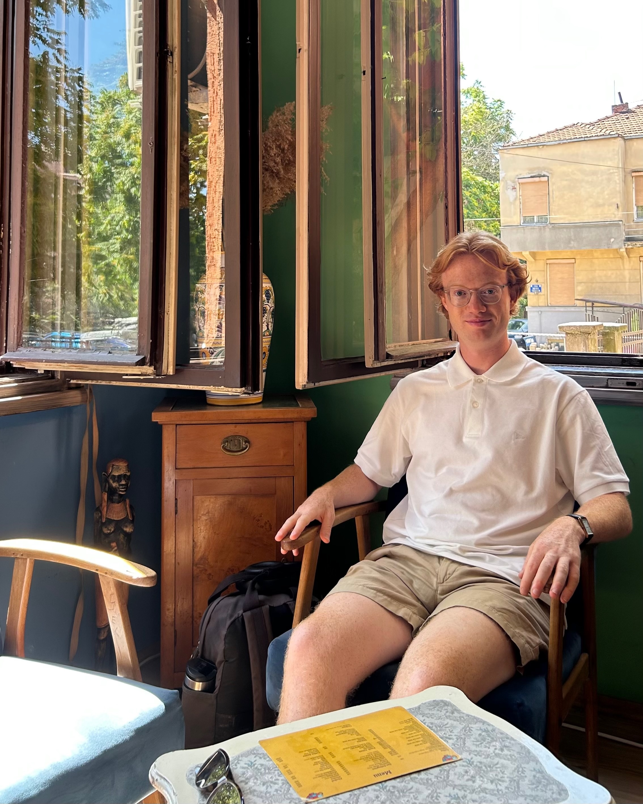
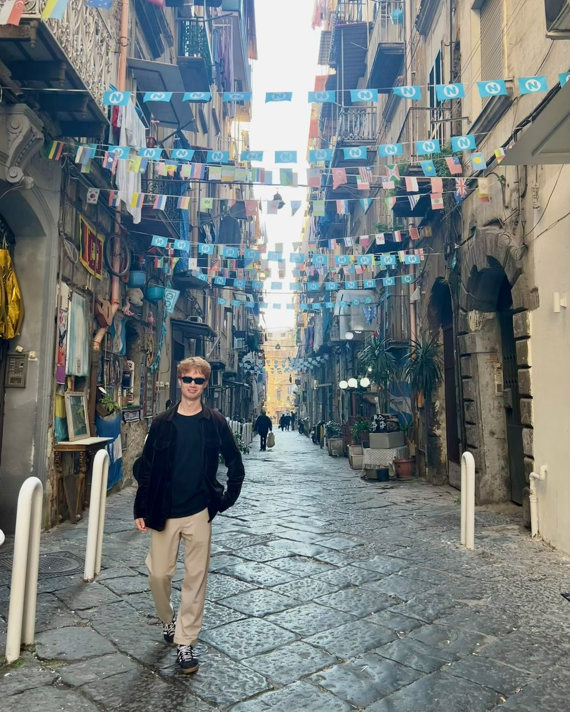
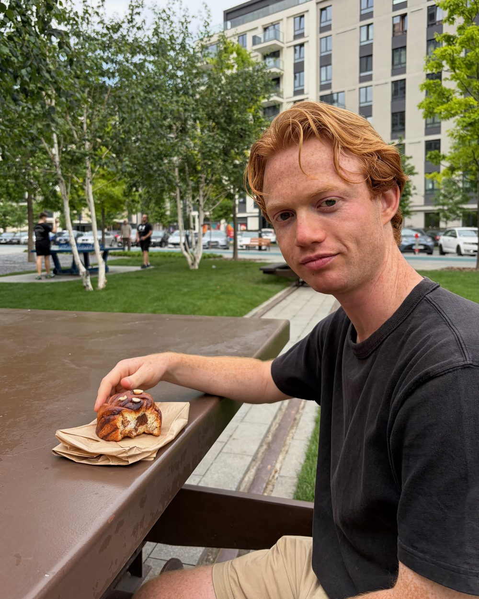
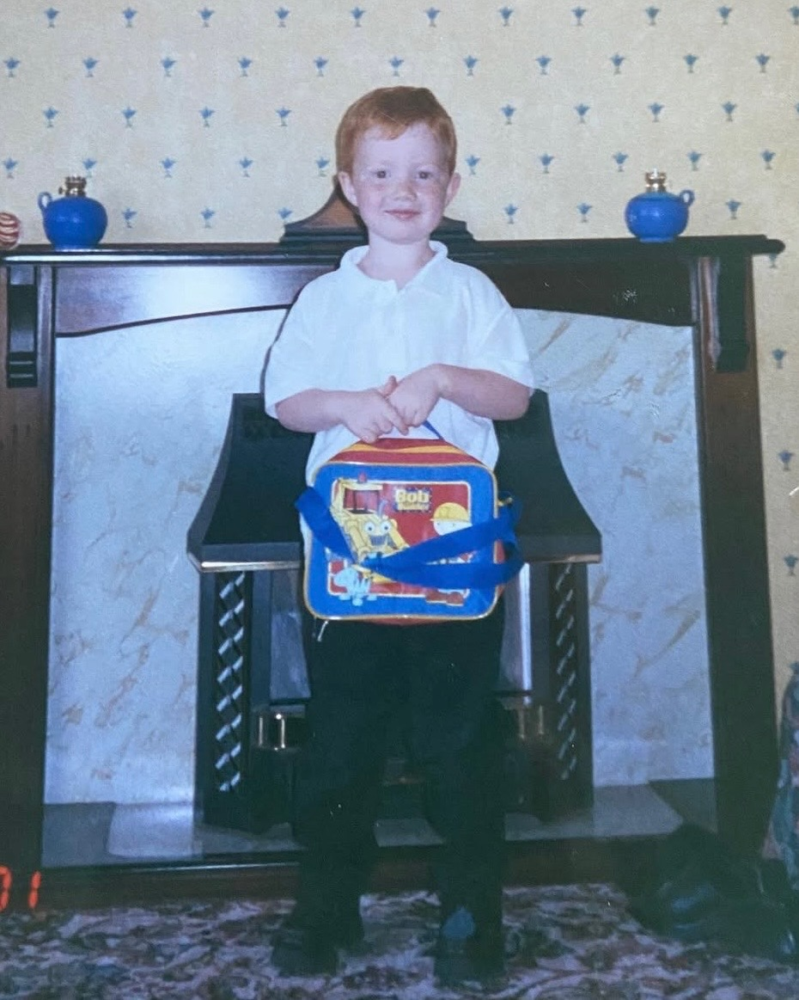

callum huntington




I am currently a PhD student at the University of Naples Federico II, supervised by Professor Francesco Belardo.
My field is spectral graph theory: what the eigenvalues of a graph's matrices can tell you about the graph itself.
Most of my work concerns signed and complex unit gain graphs, where every edge carries a sign or a complex number of modulus one.
Away from mathematics I enjoy travelling and shooting film. There is a gallery of photos, each pinned to the place it was taken.
Here is my CV (last updated September 2026) and you can contact me at callumhuntington(at)gmail(dot)com! :)